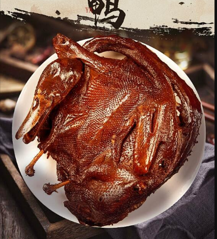

欢迎访问我的家乡首页！
我们致力于提供最新鲜、独特且引人入胜的内容。无论您是寻找美食灵感、想 要探索令人叹为观止的风景，还是想要了解我们家乡的热点新闻和文化风土人情， 我们都为您提供了一个全方位的平台。
我们的特色服务包括：
美食之旅： 品味世界各地的美食，探索独特的烹饪文化。
风景画廊： 欣赏令人陶醉的自然景色，感受大自然的奇迹。
热点新闻： 了解最新最热门的新闻动态，时刻保持信息更新。
风土人情： 探寻每个角落的独特之处，感受不同文化的魅力。
美食介绍
欢迎品尝我们家乡的美食！以下是一些美味佳肴的介绍：
-
臭豆腐
-
常德米粉
-
酱板鸭

桃花源
柳叶湖
常德诗墙
夹山寺
常德桃花源是一个以桃花景观和文化底蕴为主要特色的旅游胜地。这里是中国古代文学名著《桃花源记》的故乡， 游客可以在这里了解中国古代文学和常德的历史文化，感受中国古代文明的独特魅力。此外，园区内还有许多自然景观 和特色项目，如桃花节、摄影等。
常德柳叶湖旅游度假区是一个以湖泊景观和水上娱乐为主要特色的旅游胜地。这里有许多湖泊和水上娱乐项目 ，如游艇、划船等。游客可以在这里进行水上运动、观光和娱乐等活动，感受大自然的魅力和神秘。
常德诗墙景区是一个以文化艺术和历史文化为主要特色的旅游胜地。这里有许多文化艺术展览和历史文化遗址， 如诗墙、墓穴等。游客可以在这里了解中国古代文学和艺术、观光和参观等活动，感受文化艺术的独特魅力。
常德市石门夹山旅游区是一个以山水景观和历史文化为主要特色的旅游胜地。这里有许多山水风光和历史古迹，如石门夹山、 古代石窟等。游客可以在这里进行徒步旅游、观光和参观等活动，了解中国山水画的精髓和历史文化的魅力。
热点新闻
- 李强主持召开国务院常务会议 研究发展银发经济增进老年人福祉的政策举措等
- 国新办举行《关于推动疾病预防控制事业高质量发展的指导意见》
- 李强主持国务院第五次专题学习
新华社北京1月5日电 国务院总理李强1月5日主持召开国务院常务会议，研究发展银发经济、增进老年人福 祉的政策举措，审议进一步优化政务服务、提升行政效能、推动“高效办成一件事”的指导意见，听取保障农 民工工资支付情况汇报，讨论《中华人民共和国会计法（修正草案）》 和《中华人民共和国能源法（草案）》，审议通过《碳排放权交易管理暂行条例（草案）》。会议强调，发 展银发经济是积极应对人口老龄化、推动高质量发展的重要举措，既利当前又惠长远。要切实履行政府保基本 、兜底线职责，加强老年人基本民生保障，增加基本公共服务供给。要运用好市场机制，充分发挥各类经营主 体和社会组织作用，更好满足老年人多层次多样化需求， 共同促进银发经济发展壮大。要持续完善相关政策措施，重点解决好老年人居家养老、就医用药、康养照护 等急难愁盼问题，让老年人安享幸福晚年。 会议指出，群众和企业对政府工作的满意度，与一件件具体的政务服务事项密切相关。要把“高效办成一件事” 作为优化政务服务、提升行政效能的重要抓手，聚焦群众和企业反映集中的突出问题，加强协同配合，主动改革 创新，借助数字技术等手段进一步优化办事流程、精简办事材料、提高办事效率，为人民群众带来更好的政务服 务体验。要形成“高效办成一件事”常态化推进机制，每年梳理一批重点事项，及时复制推广地方和部门探索的好 经验好做法，坚持不懈，狠抓落实，不断增强群众和企业的获得感。 会议指出，春节前是农民工工资结算高峰期。要用心用情做好保障农民工工资支付工作，层层压实责任，加大工 作力度，依法坚决打击恶意欠薪行为。要健全完善治理欠薪的长效机制，加强常态化监测评估和检查督促，推动 保障农民工工资支付的各项制度和政策落实到位。 会议决定将《中华人民共和国会计法（修正草案）》、《中华人民共和国能源法（草案）》提请全国人大常委会 审议，审议通过《碳排放权交易管理暂行条例（草案）》。
国务院政策例行吹风会习近平总书记亲自调研疾控工作，主持召开专家学者座谈会，审定改革方案，强调要整体 谋划、系统重塑、全面提升，改革完善疾病预防控制体 系。为深入贯彻落实总书记重要指示批示精神和党中央、国务院决策部署，国家卫生健康委、国家疾控局会 同中央编办、国家发展改革委、财政部、人力资源社会保障部等部门起草了《关于推动疾病预防控制事业 高质量发展的指导意见》，经12月18日国务院常务会议审议通过，国务院办公厅于12月25日印发实施。这是 新时代推动疾控体系现代化建设的重要纲领性文件，描绘了疾控事业发展的蓝图和愿景，对构建强大的公共 卫生体系、推动实现健康中国的宏伟目标，具有非常重要的意义。《指导意见》的主要内容，可以概括为重塑 体系、完善机制、提升能力、建强队伍四个方面。 一是重塑体系，突出“大疾控”理念。要求强化各级疾控机构的核心职能，强调要压实医疗机构的公共卫生责任，夯实联防联控、群防群控的疾控工作基础，建成以疾控机构和各类专科疾病防治机构为骨干、医疗机构为依托、基层医疗卫生机构为网底，军民融合、防治结合、全社会协同的疾控体系，这是“共建共享”健康中国的具体体现。 二是完善机制，突出协同联动。从纵向看，强调了不同层级疾控机构承担职能的差异化，强调了疾控体系的上下联动和工作协同，以及上级疾控机构对下级疾控机构的业务领导。从横向看，强调了卫生健康和疾控系统内部的医防协同和医防融合，以及系统外部与有关部门和机构在监测预警等方面的密切协作和信息共享。 三是提升能力，突出系统综合。强调了监测预警、检验检测、应急处置、医疗救治、公共卫生干预、行政执法、宣传教育等疾控核心能力提升，目标是通过加快建立智慧化多点触发监测预警体系、重大疫情防控救治体系、重大传染病防治体系等，实现新发突发传染病的早发现、早处置，有效遏制艾滋病、结核病等传统重大传染病的流行。 四是建强队伍，突出以人为本。强调加强高校与疾控机构合作，从人才培养环节开始，就建立鲜明的应用型导向。要求健全完善符合疾控工作特点的人才使用和评价体系，坚持分层分类评价，重点考核工作实绩。明确在全面落实财政保障政策的同时，规范疾控机构向社会提供的公共卫生技术服务，落实有关科研激励政策。这些政策的出台，将更加有效激发人才队伍活力。
新华社北京12月20日电 12月20日上午，国务院以“打造市场化法治化国际化一流营商环境，持续激发市场活力和社会创造力”为主题，进行第 五次专题学习。国务院总理李强主持专题学习。华东政法大学教授罗培新作了讲解。国务院副 总理丁薛祥，国务委员王小洪、吴政隆作交流发言。李强在听取讲座和交流发言后指出，优化营商 环境是培育和激发市场活力、增强发展内生动力的关键之举。要深入学习贯彻习近平总书记关于优化营 商环境的重要论述和重要指示精神，始终坚持问题导向、需求导向，加快推进重点领域和关键环节改 革，在建设市场化法治化国际化一流营商环境上持续用力、久久为功，为推动高质量发展提供有力支撑。
风土人情
常德丝弦是湖南曲种湖南丝弦的重要分支，因在湖南丝弦中最为发达，影响最大，已然具有了独立曲种的地位。 湖南丝弦流传于湖南各地，因用扬琴、琵琶、月琴、三弦、二胡、京胡等丝弦乐器伴奏而得名。它系由江浙一带流入湖南的时调小曲和湖南本地的民歌曲调融合发展而成，时间约在清代初年。这个曲种用湖南方音表演，在湖南各地的流传中又形成了以常德为中心的“常德丝弦”、以长沙为中心的“长沙丝弦”、以浏阳为中心的“浏阳丝弦”、以平江为中心的“平江丝弦”、以衡阳为中心的“衡阳丝弦”和以邵阳为中心的“邵阳丝弦”等各具特色的支派，其中以“常德丝弦”最为繁盛。 包括常德丝弦在内的湖南丝弦的传统表演形式为多人分持扬琴、鼓板、京胡、二胡、三弦和琵琶等围坐一圈，轮递说唱，座次及乐器的位置均有一定之规，所谓“扬琴对鼓板，京胡对二胡，三弦对琵琶”，表演以唱为主，间有道白。道白分“表白”（第三人称）、“说白”(第一人称)、对白和插白4种，多为散文体式，偶有韵白。节目则多为《西厢记》、《二度梅》、《秦香莲》等长篇传奇故事。后来湖南丝弦走上高台，变为一至二人以简板等打节拍站唱，另有多人分持扬琴、鼓板、京胡、二胡、三弦和琵琶等专司伴奏，节目也趋于精短，代表性的有《秋江》、《追韩信》、《徐策跑城》、《四季相思》等。 湖南丝弦的唱腔音乐丰富多彩，根据所用的唱腔体式可分为“牌子丝弦”和“板子丝弦”两类。其中的“牌子丝弦”以演唱曲牌为主，曲调非常丰富，有源于南北曲的【普天乐】、【清江引】、【一支花】、【小桃红】等，有源于明清之际时调小曲的【银纽丝】、【九连环】、【倒搬桨】、【四大景】等，也有源于其他地方曲种和民歌的【莲花落】、【凤阳调】、【斗把高腔】、【安庆调】等。“板子丝弦”又分为“老路”和“川路”两种声腔风格，“老路”为常德一带流行的本地唱法，风格深沉浑厚，代表性的节目有《雪梅吊孝》和《清风亭》等；“川路”相传在民国初期由四川艺人万斌成传来，风格热烈开朗，演唱俏皮风趣，代表性的节目有《拷红》等。“板子丝弦”的基本唱腔板式有【一流】、【二流】、【三流】等3种。 常德丝弦拥有一百多个传统曲目，大部分取材于历史故事和民间传说，其中以《宝玉哭灵》、《鲁智深醉打山门》、《双下山》、《王婆骂鸡》、《昭君出塞》等最为著名。中华人民共和国成立后，又涌现出《新事多》、《夸货郎》、《风雪探亲人》等一批反映现实生活的新曲目。 常德丝弦有鲜明的地方特色和乡土气息，艺术价值较高。但因20世纪80年代以来缺少专业表演团体，加上老一辈丝弦艺人相继辞世，目前已面临失传的危险，亟待抢救和保护。
常德花鼓戏，为湖南花鼓戏六大流派之一。流行于沅水、澧水流域以及湘北鄂南毗邻地区如常德全区、湘西、怀化的部分城镇，湖北南部的公安、石首、松滋、长阳、五峰、鹤峰等地。 在常德花鼓戏流行最盛的常德地区，古为三苗、南蛮之地，自古巫风昌盛。三闾大夫屈原曾在这一带改陋词，附巫音，作《九歌》之曲。民间巫傩之风，绵延不绝。明中叶以来，常德一带民间歌舞活跃，蕴含楚文化的各种传统民间艺术形式，为常德花鼓戏的形成与发展，提供了丰厚的艺术土壤。 据记载，清代道光初年，常德花鼓戏已有了上演夜戏的戏班。1983年春，从常德石门县唐代建筑夹山寺戏残碑中，发现了记载清代中叶常德花鼓戏活动的可靠记载。常德、桃源、汉寿一带俗称为“灯戏”和“喀喀戏”，津市、澧县、临澧一带叫“花鼓戏”，石门、慈利、大庸叫“杨花柳”、“柳子戏”或“下河戏”。本世纪50年代初，演出该剧种的一些专业剧团曾一度命名为“楚剧团”，不久，复称“花鼓戏剧团”。该剧种也正式定名为常德花鼓戏。 常德花鼓戏的演出历史较长。早在清嘉庆年间，常德府各地新春灯节时，便已有了“采茶灯曲”的演唱活动。最初演出的多为以小丑、小旦为主角的“二小戏”，和以小生、小旦、小丑为主角的“三小戏”剧目。如石门的《瞧相》、桃源的《捡菌子》、常德的《圆脚盆》等保持了载歌载舞的地方花鼓风格，简单的剧情中，常夹演“盘花”、“采茶”、“望乡”等灯杂曲。石门、汉寿等地多伴随舞狮班子和玩龙班子；桃源、澧县又常在还傩愿中演出，故称愿戏。 常德花鼓戏的声腔，最初是打锣腔。在演唱形式上，是“一唱众和，不托管弦，锣鼓帮腔。”最初的演出形式，是丑角、旦角唱着打锣腔和小调，进行载歌载舞的简单的故事表演。四川传入的梁山调，与当地的民间音乐、宗教音乐和戏曲音乐相结合，形成了具有常德花鼓特色的声腔正宫调，并以基曲调的可塑性和大筒振腔保调的功能，逐渐替换了打锣腔，声腔内含的板式变化和情绪表现上的潜力，随同大本戏的上演而得到充分发挥；大型剧目也随同声腔的成熟而在常德花鼓戏中盛行。一些大型剧目，如《刘海戏蟾》、《黄金塔》、《杀狗寻夫》等，经常出现在常德花鼓戏的演出中。音乐表现手段不断丰富，表演程式逐步完善。常德花鼓戏逐渐从丑旦歌舞演唱型的生活小戏，成为了一种行当较齐、声腔较丰富的完整、定型的戏曲形式。 常德官话是常德花鼓戏的主要舞台语言，但由于其植根于广大农村，除“半台班”受汉戏影响而较注重舞台语言的规范外，一般乡班多间杂当地方言土话。这种语言差异及各地不同的传统民间音乐、宗教音乐的渗透，尤其是地方大戏剧目的不同影响，使常德花鼓戏在剧目、唱腔等方面，较明显地形成了沅水与澧水两种不同的“路子”。湖南花鼓戏的音乐曲调约300余支，根据曲调结构、音乐风格和表现手法的不同大致可分为4类：1、川调，2、打锣腔，3、洞腔（即师公腔）
石门地处湘北边陲，县境西北地区，大山绵延，是古代巴人生息的地方。元代前，为“峒蛮”所属，元末明初至清雍正十三年（公元1735年），为世袭土官添平千户所管辖。石门土家山歌就孕育于这片广袤而神秘的大山，在全县19个乡镇均有流传，集中分布在石门县西北地区的磨市镇、罗坪乡、壶瓶山、子良乡等地，与石门交界的桑植县以及湖北鹤峰县、五峰县、松滋县等相邻的边缘乡镇也相互流传。 石门土家山歌源远流长，专家考证，它源自商周时期的“巴人巴歌”，按内容主要可分为劳动、爱情、时政、叙事四大类；按演唱形式分为独唱、对唱（盘歌、解歌）、齐唱等；按腔调可分为高腔和平腔。它音乐上极具地域特色，套曲“翻天云”发音高、亮、“尖”，极具音乐的穿透力；溜溜歌、伙计儿歌、拉拉扯扯歌，歌中嵌入土家方言衬词，充满山野生活的野趣之美；赶骡调、采茶调旋律悠长、低回，富于音乐的感染力；石门土家山歌歌词多用土家方言，其中五句山歌别具一格，全面、真实、生动地反映了这一民族地区的民俗风情与生产生活，是研究、了解巴楚文化与湘鄂土家文化的“活化石”，对于这一地区的语言文字学、历史学、考古学、民俗学以及民间音乐等多学科领域都具有重要的研究价值和审美价值。 随着传统农耕文化的衰微和现化媒体文化的冲击，加之山区青壮劳力大批外出务工，青年歌手后继乏人，石门土家山歌面临失传的危机。 石门县委、县政府高度重视石门土家山歌的抢救保护，近年来，组织专业工作班子，搜集山歌3100多首，整理谱例32个，多次组织“湘鄂边山歌大赛”和“石门山歌赛”，2008年，罗坪乡作为山歌之乡被文化部授予“全国民间文化艺术之乡”。